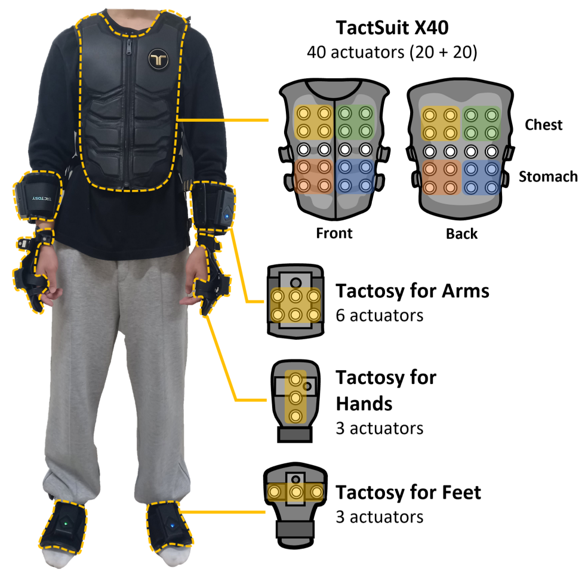

IEEE WHC'23Conference C2
Information Transfer of Full-Body Vibrotactile Stimuli: An Initial Study with One to Three Sequential Vibrations
IEEE World Haptics Conference (IEEE WHC), 2023 · pp. 41–47

Abstract
Full-body vibrotactile stimuli are a promising means by which haptic interaction designers can substantially increase information transfer (IT). This paper reports the IT values of full-body sequential vibrotactile stimuli applied to ten body sites. We designed 10, 100, and 1,000 stimuli by increasing the number of vibrations in a sequence from one to three and estimated IT for each condition. We also obtained the lower and upper bounds of the IT estimates using several empirical methods to compensate for their biases. The IT estimate for each condition was 3.32, 6.55, and 8.05 bits, the highest IT ever reported in the haptics literature. This study is the first attempt to quantify the IT of full-body vibrotactile sequences, providing guidelines for the design of effective full-body vibrotactile stimuli.
Contributions
The study varies sequence length while holding the set of ten stimulation sites fixed. It compares empirical estimates and their bounds to measure information transfer even when three vibrations produce 1,000 possible sequences.
Results & Discussion
Estimated information transfer rose from 3.32 bits for one vibration to 6.55 for two and 8.05 for three. The third vibration increased capacity, but by less than the second. These estimates give designers a basis for choosing how many successive body locations to use for a tactile message.
Citation
Publication details & BibTeX- Conference
- IEEE World Haptics Conference (IEEE WHC)
- Year
- 2023
- Pages
- 41–47
- Publisher
- IEEE
@INPROCEEDINGS{Park23FullBody,
author={Park, Jaejun and Kim, Junwoo and Han, Sangyoon and Park, Chaeyong and Park, Junseok and Choi, Seungmoon},
booktitle={2023 IEEE World Haptics Conference (WHC)},
title={Information Transfer of Full-Body Vibrotactile Stimuli: An Initial Study with One to Three Sequential Vibrations},
year={2023},
volume={},
number={},
pages={41-47},
doi={10.1109/WHC56415.2023.10224391}}BibTeX: IEEE Xplore · Cite This